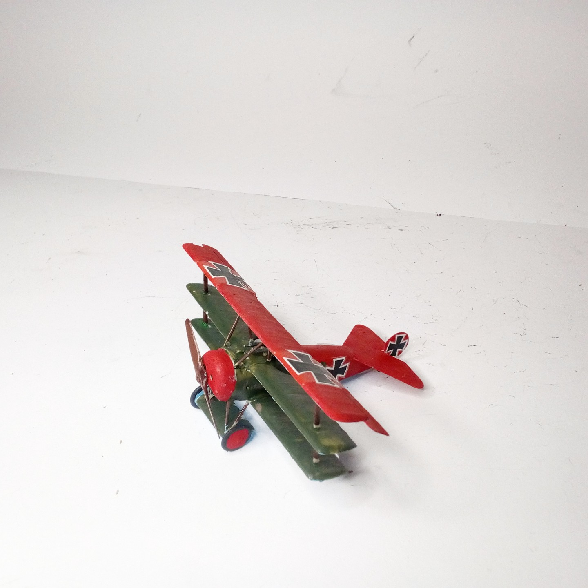
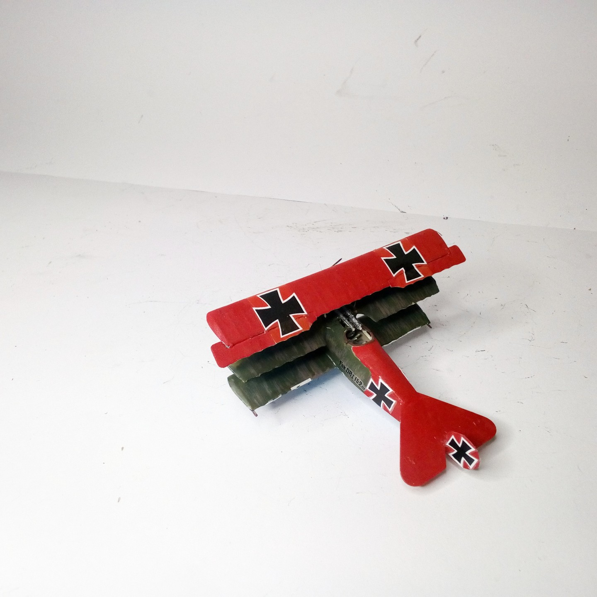

Aerei · scale model archive
Fokker Dr1
Fokker Dr1 — Kit: Roden. Scale 1/72 As flown by the famous 'Red Baron', Manfred von Richthofen #1/72 #Roden

Photo gallery

English description
Scale 1/72
As flown by the famous 'Red Baron', Manfred von Richthofen
#1/72 #Roden
Descrizione italiana
As flown by il famous 'Red Baron', Manfred von Richthofen.